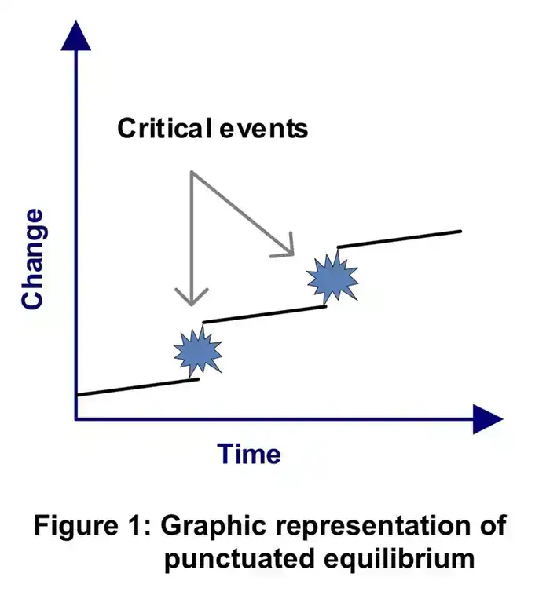
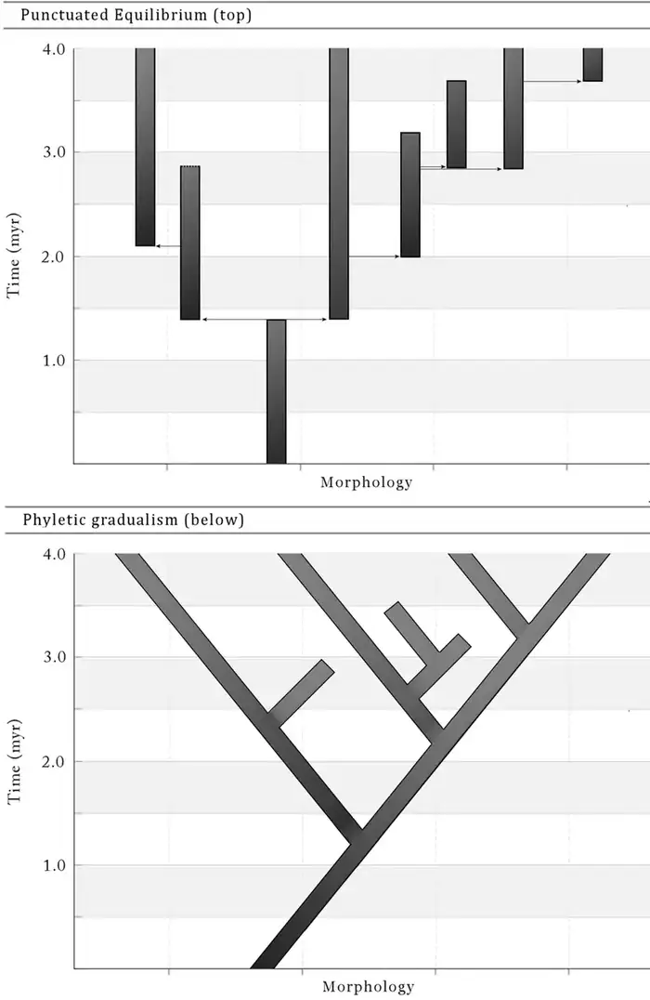

The claim
In 1972, Niles Eldredge and Stephen Jay Gould proposed that speciation happens in geologically brief bursts, and that species then remain stable for millions of years. The pattern in the rocks — stasis, then abrupt replacement — is the data the theory was built to explain.
Maps, diagrams and images




The contrast was with phyletic gradualism: slow, continuous transformation of lineages. Gould's essays made the debate famous, and the popular version became 'Darwin was wrong about gradualism'.
The reconciliation
Most biologists now regard the two as ends of a spectrum rather than rivals. Speciation can be rapid on geological timescales while still being gradual in generations; the fossil record's resolution is coarse enough that a process taking 50,000 years looks instantaneous.
The real content of the debate is about modes: whether change is concentrated at speciation events, and whether stasis is a real phenomenon needing explanation (stabilising selection, developmental constraints) rather than an artefact.
'Darwin was wrong.' Darwin emphasised gradualism, but he also accepted rapid change and gaps in the record. Punctuated equilibrium is a claim about tempo and mode within evolutionary theory, not a refutation of it.
'Evolution happens in jumps.' The bursts are geological, not single-generation. Nothing in the theory requires saltation, and the evidence for large single-step changes is limited to specific cases.
'Stasis proves nothing changes.' Stasis is a pattern to explain, and the explanations — stabilising selection, habitat tracking, developmental constraint — are testable.
Why it still matters
Because it changed how palaeontologists read the record: species are now treated as individuals with durations and stability, not just points on a transformation series. That is a real methodological shift.
It is also a good example of a scientific debate that became a cultural one, which is the pattern this archive keeps finding: the settled version is narrower, and more interesting, than the famous version.
Sources for this page
- Eldredge & Gould (1972), punctuated equilibriawww.pbs.org
- Wikipedia, “Punctuated equilibrium” — evidence and criticismen.wikipedia.org
- Gould, The Structure of Evolutionary Theory — the long defencewww.hup.harvard.edu
- Wikipedia, “Phyletic gradualism” — the rival modelen.wikipedia.org
Open resources on this topic
- BookBoundary Spatiotemporal Correlations in a Self-Organized Critical Model of Punctuated Equilibrium — ['E. Montevecchi', 'A. L. Stella'] · 1999 (Internet Archive, free to read)
- BookPunctuated Equilibrium in Software Evolution — ['A. A. Gorshenev', "Yu. M. Pis'mak"] · 2003 (Internet Archive, free to read)
- BookCriticality and Punctuated Equilibrium in a Spin System Model of a Financial Market — ['A. Ponzi', 'Y. Aizawa'] · 1999 (Internet Archive, free to read)
- PapersOpen-access articles: DOAJ · PubMed Central · Internet Archive Scholar
- BooksPublic-domain and borrowable copies: Open Library · Project Gutenberg · Google Books
Cite this page
Momin, S. (2026). Punctuated Equilibrium. The Larger World Archive. https://drsamonline.github.io/LARGE_GLOBE/punctuated-equilibrium.htmlMomin, Sohil. “Punctuated Equilibrium.” The Larger World Archive, 2026, https://drsamonline.github.io/LARGE_GLOBE/punctuated-equilibrium.html.Momin, Sohil. “Punctuated Equilibrium.” The Larger World Archive, 2026. https://drsamonline.github.io/LARGE_GLOBE/punctuated-equilibrium.html.@misc{punctuated2026punctuated,
author = {Momin, Sohil},
title = {Punctuated Equilibrium},
year = {2026},
howpublished = {The Larger World Archive},
url = {https://drsamonline.github.io/LARGE_GLOBE/punctuated-equilibrium.html},
note = {Last reviewed 20 November 2026}
}Last reviewed 20 November 2026 · Corrections policy · this page is not peer reviewed